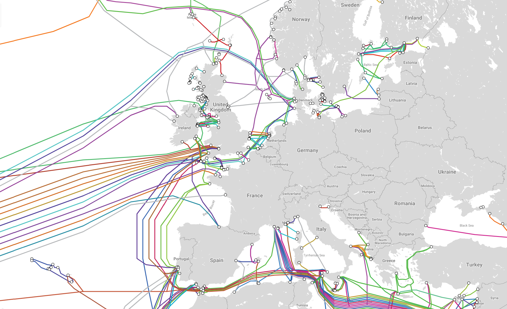

Das Internet hat die Kommunikation und insgesamt die ganze Welt stark revolutioniert.
Anfangs nur als Werkzeug für Informationsverbreitung und Kommunikationsmittel, unabhängig von dem
geographischen Standort der Nutzer, später auch zur Unterhaltung. Doch wie ist das Internet überhaupt
entstanden, wie funktioniert es und wozu wird es heute hauptsächlich genutzt? Diese Fragen sollen auf dieser
Seite beantwortet werden.
Die erste aufgezeichnete Beschreibung einer sozialen Interaktion, die durch das 'Netzwerken' ermöglicht
wurde, war eine Serie von Sprachaufnahmen vom US-amerikanischen Psychologie-Professor Joseph Carl Robnett
Licklider, besser bekannt als J.C.R. Licklider. Die Aufnahmen entstanden am MIT, an welchem er in den 50er
Jahren auch sein Interesse für die Informatik entdeckte. Darin sprach er über ein neues Konzept, das von
ihm entwickelte "Galactic Network", durch welches jeder schnell Zugriff auf Daten und Programme bekommen
sollte. In der Hinsicht war das Konzept dem heutigen Internet schon sehr ähnlich. Im Oktober 1962 wurde
Licklider bei der Gründung des
DARPA (Defense Advanced Research Projects Agency)
zum ersten Leiter gewählt. Während er dort arbeitete überzeugte er seine Nachfolger von der Wichtigkeit
seines "networking concept". Wichtige Beiträge zur Entwicklung leistete allerdings erst der ebenfalls
US-amerikanische Ingenieur Leonard Kleinrock. Juli 1962 veröffentlichte dieser seine erste Arbeit zur
sogenannten Paketvermittlung, nur
drei Jahre später dann schon sein erstes Buch zu dem Thema. Und damit war der Anfang auch schon geschafft,
denn kurz darauf wurden der TX-2 Computer in Massachusetts mit dem Q-32 Computer in Kalifornien über eine
Telefonleitung verbunden und Pakete konnten ausgetauscht werden. Damit war das erste (wenn auch kleine)
WAN (Wide Area Network) geschaffen.
Das ARPANET war das erste größere Computernetzwerk und wurde ursprünglich im Auftrag der US Air Force
entwickelt. Das Ziel des Netzwerk war es, unterschiedliche US-amerikanische Universitäten miteinander und
mit dem Verteidigungsministerium zu verbinden. Umgesetzt wurde das ganze dann ab 1969. Am 7. April vergab
ARPA den Bau eines Netzwerkes bei BBN Technologies in Auftrag. Über Mietleitungen und sogenannte
IMPs (Interface Message Processor) wurden die
Pakete an die Zielcomputer weitergeleitet und dort ausgewertet. Das gesamte System, einschließlich Hardware,
Software und Packet Switching, wurde in neun Monaten entwickelt und installiert. Offiziell stillgelegt
wurde das ARPANET dann im Jahr 1990
Nur einige Jahre später, mitte der 70er Jahre, fingen Computer Netzwerke an, sich immer weiter auszubreiten.
Wo die Finanzen vorhanden waren, wurden auch Netzwerke aufgebaut, beispielsweise vom Energieministerium
der Vereinigten Staaten mit dem MFENet (Magnetic Fusion Energy Network), die NASA mit SPAN (Space Physics
Analysis Network) und Die Informatikergemeinschaft mit dem CSNet (Computer Science Network). Mit wenigen
Ausnahmen wie dem BITNET und USENET wurden alle dieser anfänglichen Netzwerke für einen bestimmten Zweck
aufgebaut. Deshalb waren sie auch für die Öffentlichkeit nicht zugänglich und auf geschlossene
Gemeinschaften beschränkt. Daher bestand auch nicht die Notwendigkeit, die Netzwerke untereinander
kompatibel zu machen. Ein wichtiger Spieler beim öffentlich machen der Netzwerke war das NSFNET (National
Science Foundation Network). Auch wenn es anfang entwickelt wurde, um Forschung und Bildung zu verbessern,
hat es sich durch private Sponsoren und Partnerschaften mit der Industrie zu einem großen Teil des
Internet-Backbone entwickelt.

Heutzutage läuft praktisch das gesamte Internet über standardisierte Protokolle, somit sind verschiedene
Teile sehr gut kompatibel. Physikalisch gesehen besteht das Internet bei Verbindungen zwischen
Providernetzwerken, Firmennetzwerken und Universitäts- und Forschungsnetzwerken sowie in den Backbones
großer Netzwerke hauptsächlich aus Glasfaserkabeln die durch
Router zu einem Netz verbunden sind. Auf der sogenannten letzten Meile, also den Hausanschlüssen,
wird meist noch auf Kupferleitungen mit einer geringeren Übertragungskapazität gesetzt. Das vermutlich
wichtigste Element sind die sogenannten Internetknoten, welche als Datenaustauschpunkte zwischen
verschiedenen Netzwerken dienen. Allgemein werden sie auch als "Internet Exchange Point" kurz IXP bezeichnet.
Weltweit gibt es davon etwa 340, der größte ist der DE-CIX in Frankfurt am Main. An diesem sind über 100
autonome Netzwerke zusammengschlossen. Der Datenaustausch zwischen diesen Punkten wird meist über das Peering
geregelt. Dabei dürfen beide Teilnehmer die Daten kostenlos an das Netz des anderen weiterleiten. Andere
Internetanbieter müssen hingegen Gebühren bezahlen, wenn sie die Infrastruktur nutzen wollen.
Ein wichtiger Bestandteil des Internets ist außerdem die Verbindung mehrerer Kontinente, beispielsweise
von Amerika und Europa. Diese Verbindungen laufen meist über Seekabel (siehe zweites Bild). Eine Karte von
solchen Verbindungen kann auf der linken Seite dieser Box gefunden werden. Wie man sehen kann ist eine sehr
große Menge an transatlantischen Kabeln in Richtung Amerika vorhanden. Eins dieser Kabel heißt Marea und
wurde ab 2016 von Microsoft verlegt. Ein solches Kabel ist kaum dicker als ein Gartenschlauch, im Inneren
befinden sich allerdings acht Paare Glasfaserkabel, womit die gesamte Menge an übertragenen Daten auf
160 Terabits pro Sekunde kommt. Im Vergleich ist das etwa 16 Millionen Mal schneller als ein üblicher
Haushaltsanschluss.
Eine Aufgabe, für die das Internet sowohl in seinen Anfängen als auch heute noch genutzt wird ist das
Verschicken von E-Mails. Eine Statistik in den Vereinigten Staaten 2017 hat gezeigt, dass über 90% aller
Erwachsenen, die das Internet Nutzen, auch E-Mails nutzen. Ein weiterer weit genutzter Service sind
Text-Messenger sowie soziale Netzwerke. Außerdem gucken immer mehr Leute Online Videos, am meisten auf der
Plattform YouTube. Weitere Aktivitäten sind online Finanzen, Shopping, Kundendienste und sogar
online arbeiten. Zusätzlich zum Streamen von Videos, Filmen und Serien, wird das Internet auch auf anderen
Wegen zur Unterhaltung genutzt, beispielsweise durch Online Spiele. Dabei gibt es erstaunlich viele Spiele,
die nur mithilfe von HTML, CSS und JavaScript erstellt werden können. Da diese Sprachen ja gerade in unserem
Unterricht Thema sind (und mir aktuell sehr langweilig ist), habe ich eine kleine Auswahl an solchen
(retro) Browser-Spielen leicht überarbeitet und im Tab "Spiele" angefügt.
 Ein wichtiger Bestandteil des Internets ist außerdem die Verbindung mehrerer Kontinente, beispielsweise
von Amerika und Europa. Diese Verbindungen laufen meist über Seekabel (siehe zweites Bild). Eine Karte von
solchen Verbindungen kann auf der linken Seite dieser Box gefunden werden. Wie man sehen kann ist eine sehr
große Menge an transatlantischen Kabeln in Richtung Amerika vorhanden. Eins dieser Kabel heißt Marea und
wurde ab 2016 von Microsoft verlegt. Ein solches Kabel ist kaum dicker als ein Gartenschlauch, im Inneren
befinden sich allerdings acht Paare Glasfaserkabel, womit die gesamte Menge an übertragenen Daten auf
160 Terabits pro Sekunde kommt. Im Vergleich ist das etwa 16 Millionen Mal schneller als ein üblicher
Haushaltsanschluss.
Ein wichtiger Bestandteil des Internets ist außerdem die Verbindung mehrerer Kontinente, beispielsweise
von Amerika und Europa. Diese Verbindungen laufen meist über Seekabel (siehe zweites Bild). Eine Karte von
solchen Verbindungen kann auf der linken Seite dieser Box gefunden werden. Wie man sehen kann ist eine sehr
große Menge an transatlantischen Kabeln in Richtung Amerika vorhanden. Eins dieser Kabel heißt Marea und
wurde ab 2016 von Microsoft verlegt. Ein solches Kabel ist kaum dicker als ein Gartenschlauch, im Inneren
befinden sich allerdings acht Paare Glasfaserkabel, womit die gesamte Menge an übertragenen Daten auf
160 Terabits pro Sekunde kommt. Im Vergleich ist das etwa 16 Millionen Mal schneller als ein üblicher
Haushaltsanschluss.